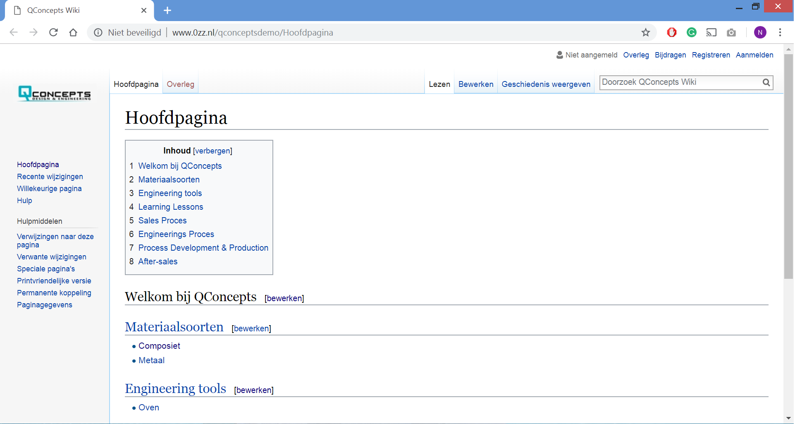

Als onderdeel van ons project hebben wij voor het bedrijf QConcepts een Wiki aangemaakt. Deze Wiki heeft als hoofdfunctie het borgen van bestaande kennis over materialen, equipment (engineerings tools) en processen, opgedane kennis en gemaakte fouten in de vorm van Learning Lessons. Het is dus een kenniscentrum.
Wij hebben deze Wiki via onze eigen server moeten aanmaken, gezien we geen toestemming kregen om op de (NAS) server van QConcepts te werken. Wij hebben daarom ervoor gekozen om alvast de Wiki infrastructuur op te zetten voor QConcepts, waarna bij implementatie op de eigen servers het bedrijf eenvoudig alle informatie kan importeren. Alle informatie waarmee ze invulling willen geven aan de Wiki is er al, enkel zit deze informatie (voor ons) achter slot en grendel.
Op de Wiki kunnen zowel de nieuwe als huidige werknemers snel hun weg vinden. De Wiki beschikt over een rechtensysteem zodat niet alle werknemers bewerkingen kunnen uitvoeren. Zo kunnen werknemers van de Sales afdeling geen wijzigingen aanbrengen in de Engineerings processen op de Wiki. De Learning Lessons is een extra onderdeel die wij hebben toegevoegd. Hiermee willen wij ervoor zorgen dat dezelfde fouten niet 2x gemaakt worden. Als een engineer merkt dat een bepaalde materiaalsoort bij een oventemperatuur een bepaalde afwijking krijgt, waardoor het product afgekeurd moet worden, kan hij dit als Learning Lessons omschrijven en op de Wiki plaatsen waardoor deze informatie voor alle medewerkers van QConcepts beschikbaar komt te staan en iedereen van de engineerings fout kan leren.
Daarnaast zijn door ons de processen in kaart gebracht (zie Product Realisation Process). Deze processen zijn vrij uitgebreid en tot op detail in kaart gebracht. Elke processtap beschikt over een uniek ID nummer. Aan alle processtappen zitten werkinstructies gekoppeld. Mocht een van deze werkinstructies niet duidelijk zijn in het Product Realisation Process, dan kan er op het unieke ID nummer in de Wiki gezocht worden waar het uitgebreid staat uitgelegd in tekst.
De Wiki beschikt daarnaast ook over een zoekfunctie. Als er gezocht wordt op het woord ‘’composiet’’, dan zal de Wiki alle documenten waarin het woord ‘’composiet’’ staat weergeven, dus niet alleen de titels van de documenten. Hierin wordt er wel onderscheid gemaakt in de bestaande koppen. Zo kun je alle documenten waarin het woord composiet staat vinden, maar waarin nog steeds onderscheid wordt gemaakt tussen of het document onder Learning Lessons valt, of bijvoorbeeld Materiaalsoorten.
De hoofdpagina van de Wiki ziet er als volgt uit:
